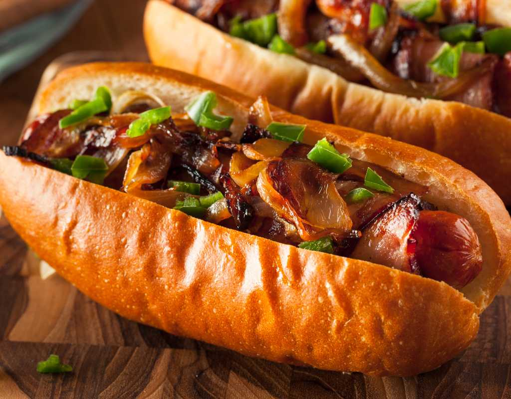

A hot dog is a grilled or steamed sausage served in the slit of a partially sliced bun. The term is often used to refer to both the sausage alone and the combination of sausage and bun. The sausage used is a wiener (Vienna sausage) or a frankfurter (frankfurter Würstchen, also just called frank). The names of these sausages commonly refer to their assembled dish. Hot dog preparation and condiments vary worldwide. Typical condiments include mustard, ketchup, mayonnaise, relish, sauerkraut, onions, and cheese sauce. Other toppings include chili, diced onions, jalapeños, sliced pickles, bacon, and tomatoes.
Hot dogs are a popular American food, often served at barbecues, picnics, and sporting events.
